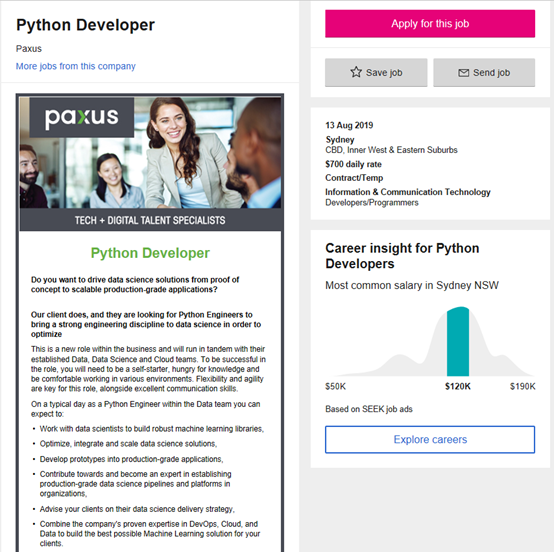

Qiheng Chen
Personal Information
My name is Qiheng Chen and my student number is s666666.
If anyone want to contact me via email then you can sent to s666666@student.rmit.edu.au.
I¡¯m Chinese and our country have 5 thousand years culture. We also proud of that Mandarin
have the most users in the world not only in China but in Malaysia,
Indonesia and so on. I like to play league of legends when I¡¯m free.
Interest in IT
I am interest in IT because it¡¯s a technique most of people don¡¯t have. The first time
IT engage me is in year 5, my primary school conducted a Q-Basic course.
However, the only reason we selected that course is that we can play
Counter-Strike on class.But now I¡¯ve graduated from RMIT diploma of IT
my objective is learn about Java and python. RMIT attract me because
RMIT¡¯s facilities are among the most advanced in Australia. There must
be a lot of artificial intelligence in future, learning python can make
me build and understand it.
See my work

https://www.seek.com.au/job/39696672?searchrequesttoken=821ea902-8d81-4df2-ba23-113ee114c3a4&type=standout

According to the job description, I will be a developer of Python to update production-grade applications.
Building comprehensive machine learning libraries is the main work. The other
part is scheme data science solution for our clients. This job appealing to
me because it can combine working and learning together.
In the process of working, it is necessary to be flexibility and communicable.
Group working is always be a basic skill need to learn even more so do my job
with other Python Engineers and data scientists. The standard of this role is
3 years of experience with Python. If you are proficient in using Django and
Flask, it will be given priority.
For the plan of myself, I am going to pick some course about Python and SQL.
I already learned some SQL language during study database but its not enough
to apply this job. After 2 years learning, I¡¯ll get a fieldwork for 1 year
as a Python engineer. And then it will be the time for me to apply this job.
The result of the online Myers-Briggs test is:
Extravert(16%) Sensing(19%) Feeling(6%) Judging(6%)
? You have slight preference of Extraversion over Introversion (16%)
? You have slight preference of Sensing over Intuition (19%)
? You have slight preference of Feeling over Thinking (6%)
? You have slight preference of Judging over Perceiving (6%)
The result of the online learning style test is:
Tactile/Kinesthetic learners learn best when they can use their sense of touch and can move about. If you are a tactile/kinesthetic learner, the suggestions that follow can help you to succeed in school to the best of your ability.
? Be physically active while you study. Rather than just sit at your desk, occasionally walk back and forth with your textbook or notes as you read the information out loud.
? To decrease your fidgeting as you study, listen to music, preferably baroque music. However, discontinue this if you find the music to be distracting.
? Make extensive use of a computer and the Internet. Actively touching the keyboard will keep your mind active.
? Take extensive written notes in class. Edit and type them later.
? Study in short blocks of time with frequent but short breaks.
? Do something physical as you study such as tapping a pencil or squeezing a stress ball.
? Use your finger as a guide while reading.
? Act out things you have to learn whenever possible.
? Construct models of things you have to learn whenever possible.
? If you find it difficult to sit at a desk when studying, trying lying on your stomach or back.
? When trying to remember information, close your eyes and "write" the information in the air. Picture the information in your mind as you do so.
? Use concrete objects to help you understand math concepts.
? When trying to learn the spelling of a difficult word, arrange letter blocks to spell the word.
The result of the 16personalities test is :
53% Mind
This trait determines how we interact with our environment.
63% Energy
This trait shows where we direct our mental energy.
51% Nature
This trait determines how we make decisions and cope with emotions.
54% Tactics
This trait reflects our approach to work, planning and decision-making.
49% Identity
This trait underpins all others, showing how confident we are in our abilities and decisions.
Integrating all above online test results, I am extravert in daily life and my future occupation may involve either a lot of direct interaction with other people
or involve responsibility for critical tasks. As the analysis, ESFJs enjoy being in charge.
They see problems clearly and delegate easily, work hard and play with zest. ESFJs, as do
most SJs, bear strong allegiance to rights of seniority.
The result tells me my positioning in the team, if I form a team I will find teammates have complementary styles with me. It is the key to build an almighty team.
Overview
The product I am currently designing is a smart dressing service machine that has a large storage space to store all your clothes. And manage them with a smart storage system. The computer can match different styles according to your favorite style and quickly find them from the clothes. After confirmation, the robot arm will help you dress your clothes, you just need to stand up. The inspiration will be shared via the Internet or stored in a local database.
Motivation
Most programmers focus on how to improve their knowledge and how to solve problems in a more advanced and simple way. They do not have enough time to pay attention to their appearance dress, but now it is indispensable in this era. So I designed this machine and used the programmer's method to help the programmer improve the quality of life. A good image can enhance the first impression of strangers, but also make you more confident and feel good. It can help
customers reduce their daily wear and worry and spend more time on study and life.
Description
From the direct appearance, our product is like a cabinet bigger than the ordinary wardrobe. But in fact, this is an advanced artificial intelligence furniture. The ability to interact with people is the place where it is different from the general products. It will also better serve the disabled and change clothes every day much faster than themselves. It will directly control the clothes and trousers placed in the storage space, and analyze the recent star
wear photos combined with some clothes to find the closest style to match the home page for the user to choose. If the user needs to buy new clothes, they can also place an order directly, and in the absence of extreme weather, they will be delivered to the home the next day. After accepting the package, you only need to put it into the machine. The computer will control
the robot arm to unpack and put the clothes into the storage space, and the wrapping paper will be directly thrown into the trash can.
The computer in this product has a data repository, and all the clothes you have are stored in it for users to mix and match. The controller also has a function to connect to the Internet, accurately receiving the day's temperature, somatosensory temperature and air humidity for the user to match the most suitable clothing choice. The recommended package will also be adjusted according to the user's mood and schedule. When the user confirms the matching of the
clothing, just raise his arms to the level and say "start", the two arms will immediately extend and put the clothes on the body. It can also make corresponding clothing changes according to the user's age, height and body shape, so the user does not have to worry about the trouble that the clothes will not fit. Of course this takes an extra five minutes to complete and
modify the various steps of the size.
As an intelligent system, its function is obviously more than that. In addition to the usual situation, it can handle a variety of special situations. At the same time as changing clothes, the system will automatically detect the user's body and skin condition, and if there is an abnormality, a report will be displayed on the screen. If the situation persists for a week, it will also use SMS to notify the emergency contact to advise the user to seek medical
attention. If the user is having a fever, the system will automatically give him one more jacket. Search online based on symptoms and provide appropriate mitigation options. When the user's expression is angry, the background concert plays hip-hop or rock music and recommends some brightly colored streetwear.
Tools and Technologies
Docker and Git will be possible open resource tools for this project. For software we need CAD as a tool to paint blueprint, both matlab robotic toolbox and Dobot Studio are useful to control robotic arms. An Infrared sensor is necessary for control system to determine the location of user. Weather forecasting software is an important part of this product when the forecast is accurate then the system can recommend suitable clothes to customers.
Skills Required
The C programming language is a basic skill for this application. Skilled in using the above software such as matlab robotic toolbox and Dobot Studio will be a great help to this project. MCU, steering gear and Alec board can build up a simple robotic arm. Controling the angle of the steering gear through the duty cycle of the output pulse of the single-chip microcomputer, thereby controlling the end of the arm to move to the target position by the control system.
Outcome
If the project is successful, no one will be nervous because they can't decide to go out and wear, and they won't be afraid of socializing because they are not fashionable enough. After using this product, you will be the brightest person no matter where you go. After combination with an external temperature sensor, it will give the best user experience a sense of temperature.